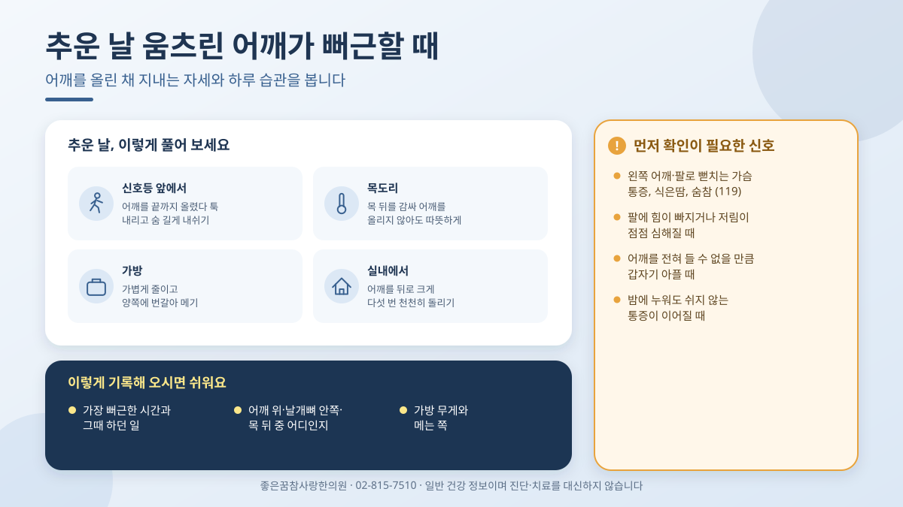

이종호 한의사 감수좋은꿈참사랑한의원 대표원장 (한의사 면허번호 19769)발행 2026-11-22 · 수정 2026-11-26
이 글의 차례
겨울에는 나도 모르게 어깨를 귀 쪽으로 올리고 걷게 됩니다. 찬바람을 막으려는 몸의 반응이지만, 하루 종일 이어지면 어깨 위쪽과 목 뒤가 돌처럼 뭉친 느낌이 남습니다. 움츠린 자세를 풀어 주는 생활 요령과 함께 확인할 점을 정리합니다.
왜 이런 불편이 생길 수 있나요
- 추위에 어깨를 들어 올린 자세가 오래가면 어깨 위쪽과 목 뒤 근육이 계속 힘을 쓰게 됩니다.
- 두꺼운 외투와 무거운 가방이 어깨를 아래로 누르면 같은 근육에 부담이 겹칠 수 있습니다.
- 추운 날에는 움직임이 줄어 근육이 굳은 느낌이 더 오래 남기 쉽습니다.
- 실내에 들어와서도 외투를 입은 채 앉아 있으면 움츠린 자세가 그대로 이어지기도 합니다.
- 손을 주머니에 넣고 걸으면 팔이 몸에 붙고 어깨가 앞으로 말리기 쉽고, 빙판길에서 균형을 잡느라 어깨에 힘이 더 들어가기도 합니다.
- 긴장하면 숨이 얕아지고 어깨와 목 근육에 힘이 들어가기 쉬워, 잠과 생활 리듬도 함께 봅니다.
먼저 이렇게 여쭙니다
- 뻐근한 곳이 어깨 위쪽인가요, 날개뼈 안쪽인가요, 목 뒤인가요?
- 밖에서 걸을 때 어깨가 올라가 있다는 말을 들은 적이 있나요?
- 팔이나 손이 저리거나 힘이 빠지지는 않나요?
- 가방과 외투 무게, 메는 방식은 어떤가요?
- 두통이나 잠 문제가 함께 있나요?
예를 들면 이런 경우입니다
- 예를 들어 언덕길을 걸어 지하철역까지 출근하는 직장인이 찬바람에 어깨를 움츠린 채 걷고 사무실에서도 그 자세로 모니터를 보는 경우, 출근길 옷차림과 사무실 의자·화면 높이를 함께 점검합니다.
- 예를 들어 패딩을 입고 무거운 책가방을 멘 채 하루 종일 독서실에 앉아 있는 수험생이라면, 가방 무게와 실내에서도 외투를 입고 있는지 여쭙고 자리에 앉으면 외투를 벗고 짐을 나눠 드는 방법을 권합니다.
- 예를 들어 두꺼운 외투 위로 아기띠를 하고 아이를 안는 부모라면, 어깨끈이 목 쪽으로 몰리지 않는지, 아이를 안는 쪽이 한쪽으로 치우치지 않는지 함께 봅니다.
스스로 점검해 보세요
- 거울을 보면 어깨가 귀 쪽으로 올라가 있거나 목이 짧아 보인다.
- 숨을 길게 내쉬며 어깨를 내려 보면 그제야 힘이 들어가 있었다는 것을 안다.
- 바깥에 오래 있었던 날 저녁에 더 뻐근하다.
- 실내에서도 외투를 입은 채 오래 앉아 있다.
- 이를 꽉 물거나 턱이 뻐근한 날이 많다.
- 뻐근함과 함께 두통이나 잠드는 어려움이 있다.
- 팔이나 손이 저리고 점점 심해진다.
앞의 다섯 가지는 옷차림과 자세, 쉬는 습관을 바꾸며 지켜볼 수 있는 단서인 경우가 많습니다. 뒤의 두 가지는 진료 때 먼저 말씀해 주시고, 특히 저림이 점점 심해진다면 기다리지 말고 확인을 받으세요.
일상에서 먼저 해 볼 수 있는 것
- 신호등을 기다릴 때마다 어깨를 한 번 끝까지 올렸다가 툭 내리고 숨을 길게 내쉬기
- 목도리로 목 뒤를 감싸 어깨를 올리지 않아도 따뜻하게 하기
- 가방은 가볍게 줄이고 양쪽에 번갈아 메기
- 실내에 들어오면 어깨를 뒤로 크게 다섯 번 천천히 돌리기
- 자기 전 따뜻한 샤워 뒤 목과 어깨를 가볍게 풀기
- 장갑을 끼고 손을 주머니 밖으로 꺼내 팔을 가볍게 흔들며 걷기
한의원에서 함께 살필 수 있는 경우
- 겨울에 어깨가 늘 올라가 뭉치는 경우 어깨와 목 주변 근육의 긴장을 함께 살핍니다.
- 목을 움츠린 자세가 오래가 두통까지 이어지는 경우 자세와 잠을 함께 여쭙니다.
- 활동량이 줄어 몸 전체가 굳는 경우 생활 속 움직임 방법을 함께 정합니다.
첫 방문은 이렇게 진행합니다
좋은꿈참사랑한의원의 첫 진료는 대체로 아래 순서로 진행합니다.
- 이야기 듣기: 하루 중 언제, 어디에서 가장 뻐근한지, 출퇴근길과 실내 자세, 가방과 외투, 잠과 긴장 정도를 먼저 듣습니다.
- 맥과 혀, 배 살피기: 모든 분께 맥을 먼저 짚고 혀와 배를 살펴 긴장과 피로가 몸에 어떻게 쌓여 있는지 봅니다.
- 움직임 확인: 어깨를 올리고 내리기, 팔 들어 올리기, 고개 돌리기를 함께 해 보며 어깨 위쪽과 날개뼈 주변이 어떻게 움직이는지 확인합니다.
- 필요하면 초음파: 필요하다고 판단될 때 초음파로 어깨 주변 근육과 힘줄을 살핍니다.
- 방향 정하기: 상태에 맞춰 침·약침·추나 등을 정하고, 필요하다고 판단되면 IS400 극초단파 온열 치료나 맥스톰 자기장 치료를 함께 의논합니다. 귀가 전에는 추운 날 바깥에서 해 볼 수 있는 자세 요령을 알려 드립니다.
이렇게 기록해 오시면 상담이 쉬워집니다
- 하루 중 가장 뻐근한 시간과 그때 하던 일
- 뻐근한 위치(어깨 위, 날개뼈 안쪽, 목 뒤)
- 팔 저림이나 두통이 있었던 날
- 평소 메는 가방의 무게와 메는 쪽
얼마나 지켜보고, 언제 상담하면 좋을까요
- 옷차림과 가방, 자세를 바꾼 뒤 1~2주 동안 하루 중 가장 뻐근한 시간과 정도를 적어 보세요.
- 2주가 지나도 그대로이거나 따뜻한 날에도 같은 뻐근함이 이어진다면 상담을 받아 보세요.
이런 증상은 먼저 확인이 필요합니다
- 가슴이 조이거나 아프면서 왼쪽 어깨나 팔로 뻗치고, 식은땀이나 숨참이 함께 있는 경우
- 팔 저림이 새로 생기거나 점점 심해지고, 팔에 힘이 빠지는 경우
- 어깨를 전혀 들 수 없을 만큼 갑자기 아픈 경우
- 밤에 누워도 쉬지 않는 통증이 이어지는 경우
- 넘어지거나 부딪힌 뒤 어깨 모양이 달라 보이거나 팔을 들기 어려운 경우
가슴 통증과 식은땀, 숨참이 함께 있거나, 팔 힘이 빠지고 저림이 빠르게 심해지거나, 넘어진 뒤 어깨 모양이 달라 보이면 한의원 진료를 기다리지 말고 가까운 응급실을 이용하세요. 갑자기 어깨를 들 수 없거나 밤에도 쉬지 않는 통증이 이어지면 정형외과 등 의과 진료를 먼저 받으세요. 복용 중인 약은 처방한 의사와 상의 없이 줄이거나 끊지 않습니다.
관련 글
- 한파에 어깨를 움츠리고 출근한 날 목과 어깨가 굳으면 어떻게 살피나요?
- 두꺼운 패딩에 무거운 가방까지 메는 겨울에 어깨가 처지고 아프면 어떻게 살피나요?
- 거북목과 라운드숄더는 집에서 어떤 스트레칭을 해 볼 수 있나요?

여쭙는 것
- 뻐근한 곳이 어깨 위쪽인가요, 날개뼈 안쪽인가요, 목 뒤인가요?
- 밖에서 걸을 때 어깨가 올라가 있다는 말을 들은 적이 있나요?
- 팔이나 손이 저리거나 힘이 빠지지는 않나요?
생활에서 해 볼 것
- 신호등을 기다릴 때마다 어깨를 한 번 끝까지 올렸다가 툭 내리고 숨을 길게 내쉬기
- 목도리로 목 뒤를 감싸 어깨를 올리지 않아도 따뜻하게 하기
- 가방은 가볍게 줄이고 양쪽에 번갈아 메기
한의원에서 함께 살필 것
- 겨울에 어깨가 늘 올라가 뭉치는 경우 어깨와 목 주변 근육의 긴장을 함께 살핍니다.
- 목을 움츠린 자세가 오래가 두통까지 이어지는 경우 자세와 잠을 함께 여쭙니다.
- 활동량이 줄어 몸 전체가 굳는 경우 생활 속 움직임 방법을 함께 정합니다.
먼저 확인이 필요한 신호
- 가슴이 조이거나 아프면서 왼쪽 어깨나 팔로 뻗치고, 식은땀이나 숨참이 함께 있는 경우
- 팔 저림이 새로 생기거나 점점 심해지고, 팔에 힘이 빠지는 경우
- 어깨를 전혀 들 수 없을 만큼 갑자기 아픈 경우
한눈에 보는 표
| 구분 | 핵심 |
|---|---|
| 여쭙는 것 | 뻐근한 곳이 어깨 위쪽인가요, 날개뼈 안쪽인가요, 목 뒤인가요? 밖에서 걸을 때 어깨가 올라가 있다는 말을 들은 적이 있나요? |
| 생활에서 해 볼 것 | 신호등을 기다릴 때마다 어깨를 한 번 끝까지 올렸다가 툭 내리고 숨을 길게 내쉬기 목도리로 목 뒤를 감싸 어깨를 올리지 않아도 따뜻하게 하기 |
| 한의원에서 함께 살필 것 | 겨울에 어깨가 늘 올라가 뭉치는 경우 어깨와 목 주변 근육의 긴장을 함께 살핍니다. 목을 움츠린 자세가 오래가 두통까지 이어지는 경우 자세와 잠을 함께 여쭙니다. |
| 먼저 확인이 필요한 신호 | 가슴이 조이거나 아프면서 왼쪽 어깨나 팔로 뻗치고, 식은땀이나 숨참이 함께 있는 경우 팔 저림이 새로 생기거나 점점 심해지고, 팔에 힘이 빠지는 경우 |
자주 묻는 질문
추위로 인한 어깨 뻐근함은 한의원에서 어떻게 보나요?
뻐근한 위치와 시간, 자세와 생활 습관을 묻고 어깨와 목의 움직임을 살피며 필요한 경우 침이나 추나 같은 방법을 상의합니다.
어깨 운동은 아플 때도 해야 하나요?
아픈 범위를 넘기지 않는 가벼운 동작만 하고, 통증이 커지면 멈추세요.
핫팩을 붙이고 자도 되나요?
저온 화상이 생길 수 있어 자는 동안에는 권하지 않습니다.
목도리를 하면 어깨가 덜 올라가나요?
목 뒤가 따뜻하면 어깨를 덜 움츠리게 된다는 분이 많아 한 번 해 보시고, 불편이 계속되면 상담해 주세요.
온열 치료를 받기 전에 알려야 할 것이 있나요?
몸속에 금속이나 전자 의료기기가 있거나 피부 감각이 둔한 곳이 있다면 미리 말씀해 주세요. 확인한 뒤 온도와 시간을 맞춥니다.
실내 난방은 어느 정도로 하면 좋을까요?
실내가 너무 덥고 건조하면 바깥과의 온도 차가 커져 나갈 때 더 움츠러든다는 분도 있습니다. 겉옷을 벗고 편히 지낼 수 있을 정도로 맞추고 습도도 함께 살펴 주세요.
좋은꿈참사랑한의원은 재진 때 지난번 이야기부터 이어서 여쭙니다. 진료시간과 예약은 오시는 길에서 확인하세요.
어디서 상담받을 수 있나요?
좋은꿈참사랑한의원은 서울 동작구 만양로2길 2 신성빌딩 3층·5층(서울 동작구 상도동, 7호선 상도역 3번 출구 근처)에 있습니다. 한의사 3명(이종호 대표원장, 조영기 수석진료원장, 정원영 진료원장)이 진료합니다. 진료시간은 평일 09:30~20:00(점심 13:00~14:00), 토·일·공휴일 09:30~15:00이며, 방문 전 전화로 확인을 권합니다. 예약은 네이버 예약, 카카오톡 상담, 전화 02-815-7510로 받습니다.
이 글은 일반적인 건강 정보이며 개인의 진단이나 치료를 대신하지 않습니다. 증상이 있거나 복용 중인 약이 있다면 진료를 통해 확인하세요. 치료 효과는 개인마다 다를 수 있습니다.
작성 기준: 일반적으로 알려져 있는 건강 정보를 참고해 정리했습니다(대표원장 감수). 증상 기록은 1~2주 동안 하루 1회, 비슷한 시간에 적어 오시면 지난 상태와 비교하기 쉽습니다.